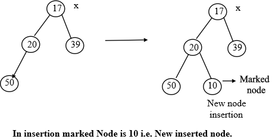
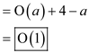

Fibonacci Heap
Fibonacci Heap is a data structure which is collection of binomial trees which are min- heap ordered. In the Fibonacci heap the key of child node is more than or equal to the key of its parent node. It is used for various applications such as calculating minimum spanning tree, single source shortest path as it is asymptotically faster. Its running time is far better than the normal heap.
Marked Fibonacci Heap: In Fibonacci heap, there are two fields for every node: marked and unmarked. In the beginning, entire nodes of the heap are unmarked. If a node of Fibonacci heap has lost its child, then the parent of corresponding node is marked.
Example to illustrate Marked Fibonacci Heap in Deletion: Initially, all the nodes are unmarked and are satisfying the heap property. A heap property implies that the value of parent node is less than the value of its child node. In order to violate heap property so replace the node value from 50 to 19. This replacement violates the heap property as value of the parent node is greater than the value of its child node.
After the violation of heap property, CUT the child nodes from its parent node. Then mark the parent node, and by using CASCADING-CUT method insert the child node into the root list.
Remove node 20 and store the node in root list and then further marked node 39 becomes the root node. Thus, x node reaches to the marked node.
This is the case, when deletion happens. And a node is selected.
Another Example to illustrate Marked Fibonacci Heap in Insertion: Initially, all the nodes are unmarked and are satisfying the heap property. A heap property implies that the value of parent node is less than the value of its child node. Now take the initial tree and insert a new node with value 10. Then following procedure will be followed. Node 10 is inserted at the place to insert a new node.

Now another step is to follow the Fibonacci Heap guidelines. Now need to exchange marked node with the parent node because parent node is greater than the marked node. Now check again and exchange marked node with the root node as root node is greater than marked node. Now marked node 10 becomes the root node and there is the x. Thus, x reaches to the marked node. Look at the given figure:
 depicting
marks is marked by 2 to pay for two works in FIB-HEAP-DECREASE-KEY;
one division pays for the cut and removing of the mask bit, and the
other division pays for the increase in potential because of
nodebecoming a
root.
depicting
marks is marked by 2 to pay for two works in FIB-HEAP-DECREASE-KEY;
one division pays for the cut and removing of the mask bit, and the
other division pays for the increase in potential because of
nodebecoming a
root.
As is marked, it represents extra unused potential. It functions only for loosening the asymptotic upper-bound found in amortized analysis. But the function is not able to loosen it (for this, see the cascading-cut potential function shown below). This unneeded growth in potential is paid, for the analysis of FIB-HEAP-DECREASE-KEY.
Cascading-Cut Potential Function:
Cascading cuts means, when key value of a node decreases and become smaller than its father, then that part is cut from the tree and is made to join with the root list.
Now, checking this node ancestor, till we reach the marked node that is going to cut,
The potential function = number of trees + 2 times number of marked nodes.
Consider that a be the number of trees added to the root list. Then a–1 was marked (last call makes node unmarked in cascading-cuts).
Number increases by a and marked node decreases by at least a–2.
Then change in potential function is:
Finally, the total amortized cost is equal to the actual cost plus change in potential.
Here, the actual cost is and the change is potential is linear in nature, which is not going to change whether node is marked or not, even though it is not a root that was first linked to other nodes and then lost one child. Thus, the amortized cost is:

FIB-HEAP-DECREASE-KEY
Consider the FIB-HEAP-DECREASE-KEY algorithm by applying the
amortized analysis for its analysis so that we can find the average
cost for each function that it performs by using aggregate analysis
and justifying the amortized time .
.
Fibonacci heap is a type of data structure in which the min heaps are arranged in an order that is the collection of min-heap-ordered trees is called the Fibonacci heap.
Min-heap-property is the condition which says that for any node the value of its key is larger than or equal to the value of its parent node.
The root node in the Fibonacci heap points to the tree with minimum key value and the children of Fibonacci heap are connected in the circular doubly linked list.
Decreasing the key x in the Fibonacci heap by the key k where.
The HEAP-DECREASE-KEY algorithm calls the function CASCADING-CUT and CUT for the disconnection of links between nodes.
Each of the CASCADING-CUT and CUT functions run in a linear time because of the general algebraic operations of subtraction and assignment and because of absence of any loops.
Hence their time complexity is.
If there are a total of n nodes in the heap H, then this operation would be called for a maximum of n times in the worst case. Therefore, the worst case time complexity of the total number of calls made would be.
As per the aggregate analysis, for n operations the total cost per operation= Thus the average cost per operation comes out to be which is equal to. This time
complexity provides an upper bound to the maximum time taken for
the specified operations.Thus from the amortized analysis for running time of
FIB-HEAP-DECREASE-KEY as mediate cost for each function from the
aggregate analysis is.